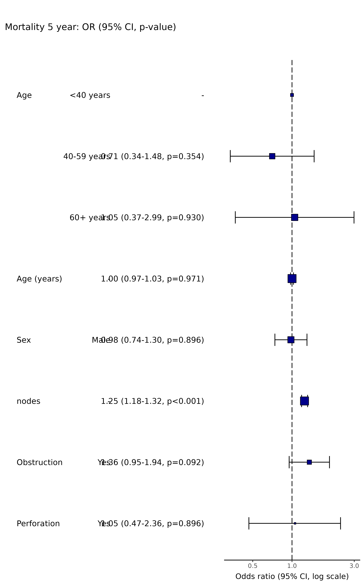

This looks for a column with a name including "Coefficient", "OR", or "HR"
(finalfit defaults) and removes any rows with "-" (the default
for the reference level). Can also be combined to produce an
or_plot, see below.
ff_remove_ref(.data, only_binary = TRUE)
finalfit_remove_ref(.data, only_binary = TRUE)Output from finalfit or similar.
Logical. Remove reference level only for two-level factors. When set to false, reference level for all factors removed.
Data frame.
# Table example
explanatory = c("age.factor", "age", "sex.factor", "nodes", "obstruct.factor", "perfor.factor")
dependent = 'mort_5yr'
colon_s %>%
finalfit(dependent, explanatory, add_dependent_label = FALSE) %>%
ff_remove_ref() %>%
dependent_label(colon_s, dependent)
#> Note: dependent includes missing data. These are dropped.
#> Waiting for profiling to be done...
#> Waiting for profiling to be done...
#> Waiting for profiling to be done...
#> Waiting for profiling to be done...
#> Waiting for profiling to be done...
#> Waiting for profiling to be done...
#> Waiting for profiling to be done...
#> Dependent: Mortality 5 year Alive Died
#> 1 Age <40 years 31 (46.3) 36 (53.7)
#> 2 40-59 years 208 (61.4) 131 (38.6)
#> 3 60+ years 272 (53.4) 237 (46.6)
#> 4 Age (years) Mean (SD) 59.8 (11.4) 59.9 (12.5)
#> 5 Sex Male 268 (56.1) 210 (43.9)
#> 6 nodes Mean (SD) 2.7 (2.4) 4.9 (4.4)
#> 7 Obstruction Yes 89 (51.1) 85 (48.9)
#> 8 Perforation Yes 14 (51.9) 13 (48.1)
#> OR (univariable) OR (multivariable)
#> 1 - -
#> 2 0.54 (0.32-0.92, p=0.023) 0.71 (0.34-1.48, p=0.354)
#> 3 0.75 (0.45-1.25, p=0.270) 1.05 (0.37-2.99, p=0.930)
#> 4 1.00 (0.99-1.01, p=0.986) 1.00 (0.97-1.03, p=0.971)
#> 5 0.98 (0.76-1.27, p=0.889) 0.98 (0.74-1.30, p=0.896)
#> 6 1.24 (1.18-1.30, p<0.001) 1.25 (1.18-1.32, p<0.001)
#> 7 1.25 (0.90-1.74, p=0.189) 1.36 (0.95-1.94, p=0.092)
#> 8 1.18 (0.54-2.55, p=0.672) 1.05 (0.47-2.36, p=0.896)
# Plot example
explanatory = c("age.factor", "age", "sex.factor", "nodes", "obstruct.factor", "perfor.factor")
dependent = 'mort_5yr'
colon_s %>%
summary_factorlist(dependent, explanatory, total_col = TRUE, fit_id=TRUE) %>%
ff_merge(
glmuni(colon_s, dependent, explanatory) %>%
fit2df()) %>%
ff_remove_ref() %>%
dplyr::select(-`OR`) -> factorlist_plot
#> Note: dependent includes missing data. These are dropped.
#> Waiting for profiling to be done...
#> Waiting for profiling to be done...
#> Waiting for profiling to be done...
#> Waiting for profiling to be done...
#> Waiting for profiling to be done...
#> Waiting for profiling to be done...
colon_s %>%
or_plot(dependent, explanatory, factorlist = factorlist_plot)
#> Waiting for profiling to be done...
#> Waiting for profiling to be done...
#> Waiting for profiling to be done...
#> Warning: Removed 1 rows containing missing values (`geom_errorbarh()`).
